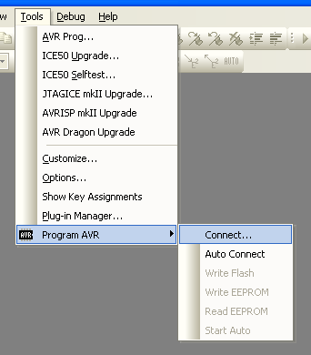
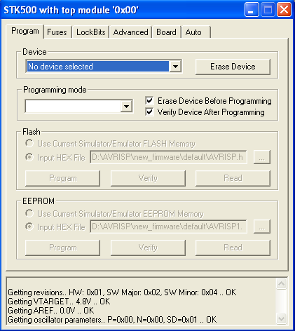
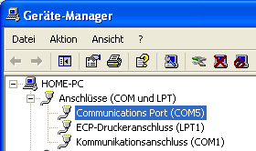

Status: fertig
Mit dem STK500v2-Protokoll-Programmer k?nnen Sie direkt aus dem AVR-Studio heraus programmieren. Er nutzt die originale Atmel-Integration im AVR-Studio, keine Zusatzprogramme wie AVRProg oder ?hnliches.
Funktionen
- STK500v2-kompatibel (direkt aus AVR-Studio benutzbar)
- Targetstatus wird mit LEDs angezeigt (nicht angeschlossen, falsch angeschlossen, korrekt angeschlossen)
- Alle AVR?s die ?ber ISP programmierbar sind unterst?tzt
- Gesamter Betriebsspannungsbereich (2,7-5,5V) programmierbar
- 1 khz - 3 Mhz ISP Frequenz
- Firmware kompatibel zu USBasp-Hardware
- Firmware kompatibel zu CCCB Programmierger?t-Hardware
Download
Die Firmware ist im AVR USB-Lab Tool enthalten.Pinbelegung
MOSI = Pin 1 der 10-poligen Schnittstelle
VCC = Pin 2 der 10-poligen Schnittstelle
TxD = Pin 4 der 10-poligen Schnittstelle
RESET = Pin 5 der 10-poligen Schnittstelle
RxD = Pin 6 der 10-poligen Schnittstelle
SCK = Pin 7 der 10-poligen Schnittstelle
GND = Pin 8 oder 10 der 10-poligen Schnittstelle
MISO = Pin 9 der 10-poligen Schnittstelle
Benutzung
AVR Studio
Der ISP meldet sich als virtueller Comport unter Windows XP an.
W?hlen Sie aus dem Men? Tools im AVR-Studio -> Program AVR -> Connect.

Oder den Button .
Nachfolgend w?hlen Sie "STK500 or AVRISP" und Auto oder den Com Port, den der USB AVR-ISP angelegt hat, aus.

Nachdem Sie auf OK geklickt haben, erscheint m?glicherweise diese Nachricht:

Sie besagt, dass die Firmwareversion auf dem Programmer nicht mit der vom AVR Studio mitgelieferten ?bereinstimmt. Damit diese Meldung nicht jedesmal beim Verbinden "nervt", kann man mit dem AVR-ISP Tool die Firmwareversion ?ndern, die dem AVR-Studio mitgeteilt wird (Siehe Terminal-Modus).Um diese Meldung zu umgehen, klicken sie auf Abbrechen.
Nun sollte sich dieses Fenster ?ffnen:

Hier haben Sie nun alle Einstellungen und M?glichkeiten, die Sie mit einem AVRISP oder STK500 auch haben. Genaueres entnehmen Sie bitte der AVR-Studio-Hilfe.
Sollten Sie Probleme beim Flashen einzelner Controller haben, schicken Sie mir bitte ein Log. Eine Anleitung zum Erstellen eines solchen finden Sie hier
Problembehebung
Wenn der Programmer nicht gefunden wird, ist m?glicherweise die Nummer des COM-Ports zu hoch. Das AVR-Studio durchsucht nur bis COM9.
Gehen Sie zum Beheben des Problems in den Ger?temanager, klicken Sie doppelt auf den virtuellen COM-Port.
Dann auf Anschlu?einstellungen
->Erweitert
Nun w?hlen Sie unter COM-Anschlussnummer einen freien Anschluss niedriger als COM 9 aus.
Nun sollte das AVR Studio den Programmer finden.
Bascom
W?hlen Sie in Bascom unter Options->Programmer im Feld Programmer STK500.W?hlen Sie unter COM-Port die Nummer der seriellen Schnittstelle, die der Programmer jetzt hat.Suchen Sie unter STK500 EXE die stk500.exe des AVR Studios (Sie findet sich normalerweise in C:\Programme\Atmel\AVR Tools\STK500\stk500.exe

Anzeigeelemente
- gr?n-rote-Dual-LED: Sie zeigt den Status der Zielhardware an.
- aus: keine Zielhardware angeschlossen
- gr?n: Zielhardware richtig angeschlossen (wenn Jumper zur Targetversorgung gesetzt ist leuchtet sie dauernd gr?n)
- rot blinkend: Zielhardware falsch angeschlossen
- rot: Programmiervorgang l?uft
- blaue LED: Sie Zeigt die PC Verbindung an
- dauernd aus: keine Verbindung
- an: Verbindung, aber kein Datentransfer
- sporadisch ausgehend: LED ist w?hrend des Datentransfers aus.
Installation
Nachdem der Programmer angesteckt wurde, fragt Windows nach einem Treiber. Diesen bringt es selbst mit, allerdings muss mittgeteilt werden, welcher Treiber zu diesem Ger?t geh?rt. Das macht man mit einer INF Datei, die hier heruntergeladen werden kann.

W?hlen Sie "Software von einer Liste oder bestimmten Quelle installieren".
W?hlen Sie im n?chsten Dialog das Verzeichnis, in dem Sie die .inf gespeichert haben.
Wenn Sie nun den Anweisungen folgen, sollte nach Abschluss des Assistenten im Ger?temanager ein zus?tzlicher COM-Port zu finden sein.

Nun ist der Programmer bereit.
ISP Frequenzen
Da der USBAVRISP mit einem 12 Mhz Quarz arbeitet, werden die STK500-Frequenzen folgenderma?en umgesetzt:
| STK500 Frequenz | USB AVR-ISP Frequenz |
| 1,8432 Mhz | 1,5 Mhz |
| 460,8 khz | 375 khz |
| 115,2 khz | 93,75 khz |
| 57,6 khz und kleiner | 1 khz |
Betriebsysteme
Windows XP
Windows XP 64
Windows Server 2008
Windows Vista 32bit
Windows 7 32bit